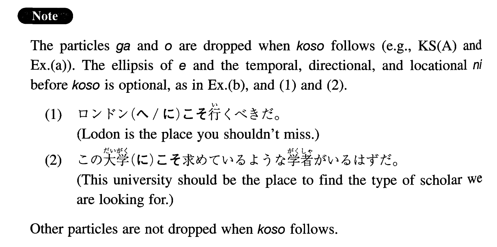

←
DoJG
→
こそ
(I. 132)
Example sentences
(ksa).
これ
こそ
我々が探し求めていたものだ。
This is the very thing that we've been looking for.
(ksb).
Ａ：どうもすみませんでした。 Ｂ：いいえ、こちら
こそ
すみませんでした。
A: I'm very sorry. B: No, it's me who should say that (literally: be sorry).
(ksc).
一人でやって
こそ
勉強になるのだ。
You can learn something only when you do it by yourself.
(ksd).
君が正直に話してくれたから
こそ
問題は最小で済んだんだ。
We could minimize the problem only because you explained (literally: told) it to us honestly.
(a).
A: 一体一週間も何をしていたんだ。 B: そう言う君
こそ
何をしていたんだ。
A: What on earth were you doing for a whole week? B: You say that but what were you doing?
(b).
こんな時(に)
こそ
全員で力を合わせて問題を解決しなければならない。
On this kind of occasion, in particular, we all have to cooperate in order to solve the problem.
(c).
今年
こそ
この試験に通ってみせる。
I will pass this exam definitely this year.
(d).
それで
こそ
我々のリーダーだ。
That is precisely the kind of behaviour we expect from our leader.
(e).
ここにいて
こそ
いい仕事も見つかるのだ。
You can find a good job only by being here.
(f).
親友だから
こそ
こんなことまで君に言うんだよ。
It's because you are my friend that I can tell you (even) such a thing.
(g).
出来ないから
こそ
人より余計に練習しなければならないのだ。
It’s precisely because you can’t do it that you have to practice more than others do.
Formation
(i)
Noun (particle)
こそ
この人
こそ
This man in particular
彼に
こそ
To him in particular
(ii)
Vて
こそ
ここへ来て
こそ
Only when/after someone comes here
(iii)
Sinformal
こそ
知らないから
こそ
Only because someone doesn’t know
